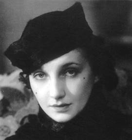
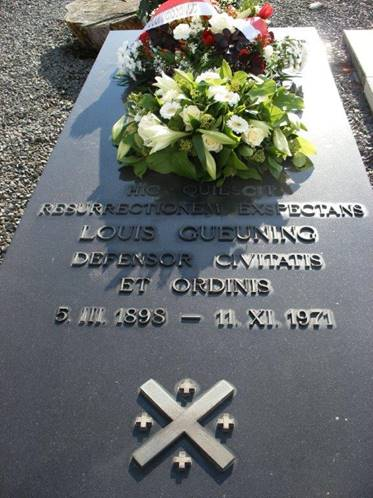

> nieuwsbrief > 2016 - nr 1
Inhoud
De
jaarwisseling nadert met rasse schreden en meteen ook het
tijdstip voor het hernieuwen van de bijdragen voor 2016. Dank
zij een zuinig beheer blijft het ons mogelijk om,
niettegenstaande alweer gestegen druk- en portkosten, de
minimumbijdrage te behouden op 29 . In ruil daarvoor verzekeren
we u andermaal de stipte toezending van het nieuwe Jaarboek Joris van Severen
het 20e al in de meimaand en van de vier nummers van ons
kwartaalblad Nieuwsbrief
Joris van Severen. Vanaf het bedrag van 35 boeken we u
met dank als steunend lid. Vereffening graag via onze rekening
IBAN: BE71 0001 7058 1469 BIC: BPOTBEB1 t.n.v. Studiecentrum
Joris van Severen, Paddevijverstraat 2, 8900 Ieper.
Grote
Fotobiografie Joris van Severen en het Verdinaso
De prestigieuze uitgave is
nog maar beperkt voorradig. Deze uitgave in album-formaat met
DVD-bijlage waarop historische Verdinaso- en Jong-Dinaso-filmen
naast beelden van een bedevaart naar de graven van Joris van
Severen en Jan Ryckoort, wordt u portvrij toegezonden na
overboeking van 55 (ledenprijs) of 65 (niet-leden) op de
hierboven vermelde rekening van het Studiecentrum te Ieper.
Extraits du Journal de Rachel Baes
Foto
Rachel Baes
Lundi 17 Février 1941
Je vais à
14 heures rue de lHôpital aux bureaux dun certain Mr.
Hurlimann, un allemand représentant en grosses machines
dimprimerie allemandes. Il a été arrêté le 10 mai de lannée
dernière, a été dans le kiosque dAbbeville, a vu et a
parlé assez longuement à Georges [van Severen]. Cest un nommé
Marreel qui lui a présenté Georges dans le kiosque.
Mr.
Hurlimann me dit que tout fut horrible, depuis leur entrée dans
le kiosque vers minuit le 19 mai, jusquau moment des exécutions
le 20 mai: Cétait atroce, vous ne pouvez pas vous
imaginer ce que ce fut. Dabord, lhorrible promiscuité,
entassée dans ce kiosque comme des harengs, les besoins par terre,
sans air. Bouclés là-dedans, dans ces odeurs, nous nous donnions
le mot pour rester le plus silencieux possible et ne pas éveiller le
colère de nos gardiens auxquels on nous avait livrés comme une
bande despions dangereux, de para-chutistes, etc....
Van
Severen sétait fait une place à croupetons contre la colonne
centrale. Assis par terre, à côté de son ami Ryckoort, il était
mé-connaissable: barbe pâle, tiré, les yeux enfoncés, mais très
calme et très courageux. Tout le monde a plus ou moins dormi un
peu, absolument convaincus que ce nétait quune très mauvaise
nuit à passer et que le lendemain nous serions délivrés.
Vers le
matin, réveil, pendant que dautres bavardaient. Mr. Marreel,
qui ma parlé à un moment donné ma dit que Van Severen se
trou-vait dans le kiosque et je 1ui ai demandé de me le
présenter, ce quil a fait.
Jai
bavardé assez longuement avec Marreel, Van Severen et Ryckoort.
Van Severen était, comme nous tous, très abattu et stu-péfait
des traitements quon nous faisait subir depuis Bruges, indigné,
disant que probablement il devait avoir été la victime dune
erreur, ou du zèle dun fonctionnaire stupide. Le jeune moine
allemand était aussi près de Van Severen et celui- ci lui a même
mis son manteau sur les épaules, car le pauvre moine grelottait
de froid. I1 y avait aussi près de Van Severen un jeune garçon
qui, je crois, était un communiste. Il semblait émerveillé du
calme de Van Severen et de sa tenue et restait à ses côtés. Plus
tard, aux heures où une faible lueur passait par les lucarnes,
des dames de Bruges se sont approchées de notre groupe et
demandèrent à Van Severen si cétait bien lui (presque
méconnaissable à cause de sa barbe). Elles se joignirent à notre
conversation et tous les brugeois, dont je ne con-nais pas les
noms, se groupèrent assez près de lentrée, Van Severen
conservant sa place au centre, près du pilier, avec Ryckoort qui
ne le quittait pas dune semelle.
Plus tard,
le bombardement terrible de la ville commença. Cétait
épouvantable, une panique terrible régnait dans le cave du
kiosque où nous étions bouclés. Van Severen essayait de rétablir
le calme, mais nous étions convaincus que notre dernière heure
était arrivée; le kiosque secoué, balançant de gauche à droite
comme sil allait sécrouler.
Cela dura
des heures
puis le calme revint. Nous désespérions de voir
arriver nos gardiens pour nous délivrer. Il devait être 3 ou 4
heures de laprès-midi, au juger, car nous étions sans montre,
lorsque tout à coup nous voyons la porte souvrir et apparaître
un officier suivi dun soldat et dune autre personne qui
réclame quatre volontaires.... Immédiatement quatre sortent,
croyant à une corvée. Nous ne les voyons plus revenir. A ce
moment-là jai vu Van Severen se lever de lendroit près du
pilier central et se diriger vers la porte, sasseyant sur un
bidon dessence vide roulé le long du mur. Il avait les bras
croisés sur la poitrine et semblait tout à coup penser
profondément. Les brugeois du kiosque, son ami Ryckoort et le
petit communiste ne le quittaient plus tant son calme les
rassuraient.
Wat
volgt stamt vermoedelijk uit de dagboeknotities
van Charles Gouzée de Harven en werd door Rachel
Baes in haar dagboek overgenomen.
Comment ces hommes qui
nont connu de Georges que le côté public pourront-ils jamais
restituer lêtre secret jusquà lhermétisme, laristocrate
rêveur et farouche, le cerveau bouillonnant, le cur tendre.
Peut-être Rachel et moi avons soupçonné la profondeur, la
richesse et les complexités de sa vie intérieure si intense.
Avant de
quitter Bruges, Rachel mavait fait rencontrer une femme arrêtée
en même temps que Georges et qui a partagé, avec sa mère
assassinée sur la place tragique, le calvaire de mon ami.
Elle me
narre en détail les mauvais traitements et les souffrances
quelles endurèrent. Son tragique récit, dit en bégayant
(bégaiement qui lui est resté de la frayeur quelle a eue) ne me
sortira jamais de la mémoire. Toujours je serai hanté par la
vision de Georges adossé au mur de la cave du kiosque
dAbbeville, au milieu des victimes terrifiées qui demandaient
grâce, Ryckoort son ami qui sanglotait en demandant quon lui
laisse la vie pour ses deux petites filles, les officiers et
les soldats déchaînés qui, au hasard, empoignaient leurs
victimes pour les forcer à sortir en les injuriant. Georges, là,
sombre et muet, songeant farouchement les bras croisés, puis
disant soudain en flamand: il faut que cela cesse, dun ton
résolu, poussant un long et profond soupir en remettant son
vêtement dans les plis, droit,
la tête haute, sortant de la cave en repoussant Ryckoort qui
voulait le retenir, et escaladant, suivi de Ryckoort qui dans
élan magnifique na pas voulu le quitter, les quelques escaliers
qui le séparaient de la place. On entendit des coups de feu, et
ils ne revinrent plus
Jai vu
aussi Louis Beyaert, le vieil ami de Georges avec lequel jai
longuement bavardé. Ah, il 1aimait son Joris
ce vieil original, et comme il la bien senti et compris.
Tout ce
pèlerinage ma bouleversé, ému, je ne pouvais men arracher.
Georges na pas su combien nous laimions, le vénérions tous.
Sil lavait soupçonné il se serait certainement senti moins
seul à certains moments de sa douloureuse vie.
Quand
jessaie de formuler ce qui constitue lessence de la nature
complexe de Georges, je me dis que cétait une délibérée et
froide exaltation, jointe à une extraordinaire domination sur
soi-même, et mise au service de la passion de lOrdre, de la
Justice et de lAutorité.
Uit DE STANDAARD van 20 mei 1947
Op
23 oktober 1939 riep de toenmalige eerste minister Pierlot een
aantal geschiedschrijvers en publicisten in zijn kabinet
tezamen "om met hen te spreken over de internationale toestand
van België". Tijdens deze vergadering was er één der
aanwezigen, die onder algemene instemming hulde bracht aan de
fiere vaderlandse houding van Joris van Severen.
En
in de maand april 1940 stuurde hij aan koning Leopold, mede in
naam van zijn volgelingen, een telegram: "Wij rekenen het ons
als een eer te zijn een verbond van mannen die willen zijn en
zijn, in diepe erkentelijkheid en edel-mannelijke trots, onder
al uw getrouwen de getrouwsten. Rondom u staat dit verbond
geschaard als een eedverbond op leven en dood."
Geplukt van het internet, met de vermelding: Ecrit par
De
Rijksgedachte van Louis Gueuning
Joseph E.
Peeters
Quos vult perdere,
Jupiter dementat
(Romeins spreekwoord)1
Vanuit Abbeville op de
Somme, waar Joris van Severen, Pater Patriae, en Jan Ryckoort
rusten resurectionem exspectans, al over deze graftombe van
Louis Gueuning, Defensor Civitatis et Ordinis;
dAbbeville
sur la Somme jusqu au Pays Rhénan et Aix-la Chapelle (Aken) où
est inhumé, depuis 814, le plus grand Empereur dOccident,
Charlemagne (Karel de Grote),
De Rijksarend op het Antwerpse
stadhuis
lAigle, symbool van het
Rijk, englobe dun regard aigu et pénétrant le Delta des trois
grands fleuves dOccident Escaut, Meuse et Rhin par-dessus
Amster-dam et par-dessus Arlon (Aarlen) en direction de Karel
de Grote en duidt met zijn scherpe snavel de richting aan: het
Gemenebest der Nederlanden, Europa van West tot Oost, de
Westerse Beschaving.2
Het zijn de ideeën (niet de
ideologieën uitgevonden door de Franse Revolutie 1789) die de
wereld beheersen: Les Idées ménent le monde!.
Wat betekent het Idee van
de Rijksgedachte en van zijn auteur Louis Gueuning? Dat Idee
borrelt op uit de maatschappelijke, geopolitieke, historische
Realiteit.3
Wat is de Rijksgedachte
van Louis Gueuning?
Een Strategie, een Tactiek,
een Strijd gevoerd door een minderheid (apostels, militanten,
propagandisten) ten dienste van het Doel.
En wat is het Doel?
Eenvoudigweg het beantwoorden, door het Volk der Nederlanden,
van zijn taak of Roeping (individueel en gemeenschappelijk), dit
wil zeggen het vervullen van zijn Europese Zending: Synthese en
Federatie.4
Eerste voorwaarde: het
Geloof (Het geloof, dat is het stalen pantser van de Wil
Joris van Severen).
Dus: de Leer (of Doctrine).
Het vervolg: de
Instellingen (De Prins in zijn Raden, het Volk in zijn
Staten), geen partijenregime (op politiek vlak)!
En dan: de Vorming.
Om het kort te maken, geen
belgicistische, separatistische, wanorde zaaiende Romp-Staat!
Nooit is de Rijksgedachte
van Louis Gueuning juister en vollediger beschreven geworden dan
in het Liber Amicorum
L.G. 70.5
Het Belgium dat is
Nederlandt, d.w.z. de Low Countries, van Stroom tot Stroom
tot aan de Zee.6
Dàt is de ziel,
Dàt is het hart,
Dàt is de ruggengraat,
Dàt is, ten eeuwige dage,
de Rijksgedachte van Joris van Severen en van Louis Gueuning.
Mainvault, november 2015
Jos Peeters is de
permanente secretaris van de Stichting Louis Gueuning.
_____________
Noten
1 De goden (= Jupiter) slaan met
verbijstering hen, die ze willen vernietigen.
2 Deze Arend troont, richting Aken, reeds
sedert 1564, op het stadhuis van de Hanza-Stede (en Markizaat)
Antwerpen één der XVII Provinciën van Keizer Karel
(1500-1558), naast Brabant, Vlaanderen, Luxemburg, Friesland,
enz.
3 Professor Léon van der Essen (KUL) was,
ten tijde van Joris van Severen, één van de wegbereiders van de
Natie der Nederlanden en haar tweeduizendjarige Geschiedenis,
samen met professor Emile Lousse en Burggraaf Terlinden.
4
Louis Gueuning, Europe de
la Synthèse (5 brochures, 1960-1965) en Synthèse de lEurope
(1968).
5 A. Wavrin, in: Liber Amicorum L.G. 70,
1968, p. 73 en volgende.
6 Hugo de Schepper, Belgium dat is Nederlandt
identiteitsbesef in de Lage Landen, Breda, 2014; zie ook t Pallieterke, rubriek
Den Vaderlandt Ghetrouwe,
29 oktober 2015, p. 7.
Heruitgave van Joris van Severen een biografisch portret
In 2010 verscheen van de
hand van de historicus Pieter Jan Verstraete bij de uitgeverij
Aspekt te Soesterdijk in Nederland in de reeks Aspekt
biografieën de eerste druk van deze uitgave.
In 2015 verscheen bij
dezelfde uitgever een tweede druk van dit werk. Inhoudelijk is
het qua tekst (110 pp.) en illustraties identiek aan de eerste
druk; enkel de cover kreeg een nieuw uitzicht.
Bij de auteur zijn een
handvol exemplaren voorradig. Bestellen kan door overboeking van
10 + 2 (verzending) via zijn adres op rekening IBAN: BE64
4627 2867 9152 BIC: KREDBEBB t.n.v. P.J. Verstraete, 8500
Kortrijk.
Naar aanleiding van
overlijdens krijgt ons secretariaat wel eens vaker
archiefmateriaal binnen. Dit wordt dan na inventarisatie
overgemaakt aan het Archief Joris van Severen binnen de Leuvense
universiteitsbibliotheek. Vaak bevatten die legaten ook boeken.
Voor zover het dubbele exemplaren betreft van titels die het
Studiecentrum al bezit bieden we deze dan aan onze leden te koop
aan. Uit de recente oogst kunnen we volgende uitgaven aanbieden:
Ø Joris van Severen, In de leer bij Joris van
Severen deel 3: De voorwaarden tot de verwezenlijking of de
methode, samengelezen door André Belmans, z.j., z.p.,
genaaid, 127 pp, 10
Ø Arthur de Bruyne, Joris van Severen. Droom en
Daad, Oranje Uitgaven, 1961, gebonden, 342 pp., 30
Ø Luc Delafortrie, Joris van Severen en de
Nederlanden, Oranje Uitgaven, 1963, gebonden, 272 pp, 20
Ø Komitee Wakken Herdenkt, Hugo Verriest Joris van
Severen, Wakken, 1984, genaaid, 161 pp., 10
Ø Luc Delafortrie, Het Genootschap Joris van
Severen. Dinaso-actie tijdens de bezetting, De
Nederlanden, 1989, geb., 138 pp., 20
Ø Stichting Louis Gueuning, Liber Amicorum Louis
Gueuning 70, 1968, genaaid, 231 pp., 15
Ø Arthur de Bruyne, De kwade jaren, deel 4,
De Roerdomp 1973, gebonden, 318 pp., 20
Ø Verstraete Erik, Wies Moens, Orion,
1973, genaaid, 70 pp., 5
Ø Jos Vinks, Van Repressie tot Egmont.
35 jaar Vlaamse strijd, De Roerdomp 1980, genaaid, 227
pp., 10
Ø Jos Vinks, Borms, De Roerdomp,
1974, genaaid, 312 pp. + fotokatern, 15
Alle boeken vertonen
uiteraard sporen van gebruik doch zijn verder ongeschonden. De opgegeven prijzen
dienen per titel verhoogd met 4 port- en verpakkingskosten.
Bestelling door overboeking op rekening IBAN: BE71 0001 7058 1469
BIC: BPOTBEB1 t.n.v. Studiecentrum Joris van Severen,
Paddevijverstraat 2, 8900 Ieper, met opgave van de
gewenste titel(s).
Aan het graf van Louis Gueuning te Mainvault op 8 novembre 2014
Jean-Pierre
Destrebecq
La grande et triste erreur
parfois,
c'est de s'imaginer que ceux que la mort a emportés nous ont
quittés.
Ils ne nous
quittent pas, ils restent.
Mais où
sont-ils donc?
Dans
l'ombre?
Oh non,
c'est nous qui sommes dans l'ombre
Eux sont à
côté de nous, sous le voile, plus présents que jamais.
Nous ne les
voyons pas parce que le nuage obscur nous enveloppe mais eux
nous voient.
Ils
tiennent leurs yeux pleins de lumière fixés sur nos yeux
attristés.
Quelle
consolation pour nous: les morts sont des invisibles, ce ne sont
pas des absents.
Foi en
cette présence réelle et ininterrompue de nos morts: c'est
l'intuition claire, pénétrante que, par la mort, ils ne sont ni
éteints, ni éloignés, ni même absents, mais vivants près de
nous, heureux, transfigurés, et n'ayant perdu, dans ce
changement glorieux, ni leur délicatesse dâme, ni leurs
qualités desprit et de cur, mais ayant, au contraire, dans ces
profonds sentiments, grandi de cent coudées.
Quel
mystère pour nous.
La mort,
pour les bons, est la montée éblouissante dans la lumière, dans
la puissance et dans l'amour.
*
Quant à
nous qui sommes là, soucieux de perpétuer encore le souvenir et
dagir encore, il nous faut apprendre, toujours, la patience et
lhumilité
En ces temps dinstabilité, apprendre que nous ne
pesons guère sur les événements, sauf ceux de notre sphère la
plus immédiate. Apprendre à subir sans désespérer le flux
quotidien des inquiétantes et sinistres nouvelles que nous
envoie le monde. Apprendre que, de-ci de-là, des gens se bougent
malgré tout, sengagent dans des voies autres que celles de la
violence et du mépris. Que des générosités sorganisent. Que des
imaginations se mobilisent pour tenter dinverser le cours des
choses. Quil y a plein de forbans aux manettes mais, dans
lombre, aussi des tas de gens qui ne demandent aucune publicité
mais mènent les «bons combats» pour rendre la vie ici-bas plus
vivable, plus humaine.
Que la
fidélité, le bien commun et la solidarité inspirent toujours nos
engagements et que ceux qui nous ont précédés éclairent notre
route!
Seigneur,
ayez pitié de ce pauvre peuple!
 Grafsteen
Louis Gueuning op het kerkhof van Mainvault
Omtrent het Studiecentrum Joris van Severen
Henri Floris Jespers
De driemaandelijkse Nieuwsbrief Joris van
Severen, nu aan zijn negentiende jaargang, werd hier al
vaak gesignaleerd. In de jongste aflevering wordt verslag
gebracht over het zesde Colloquium
Joris van Severen, dat plaatsvond op 25 oktober 2014 in
het West-Vlaamse Wakken. In zijn gedegen welkomstwoord zet
burgemeester mr. Koenraad Degroote enkele punten op de i. : Van
Severen is een figuur die zorgt voor controverse. Dit doordat
hij evolueerde van Vlaams-nationalist naar verdediger van de
neutraliteitspolitiek van Leopold III en verdediger van de Heel
Nederlandse gedachte. [...] Aldus zorgt hij bij historici voor
blijvende vragen en discussies. Het doorgronden daarvan in de
hoop tot klaardere conclusies te komen die misschien moeilijk te
geven vallen is de taak van historici, wetenschappelijke en
academische instellingen en ook het Studiecentrum dat zijn naam
draagt. Het is de bedoeling in alle objectiviteit diepgaande
historische studie te verrichten en te peilen naar wat deze
figuur bezielde. Dit moet kunnen gebeuren op een serene en
objectieve manier zodat pro en contra aan bod kunnen komen.
Kortom historisch verantwoord onderzoek, dit is wat moet kunnen.
Objectieve analyses maken zonder te oordelen of te veroordelen
maar ervoor te zorgen dat alle gegevens voorhanden zijn zodat
uiteindelijk de Tijd en de geschiedenis hun werk kunnen doen
en een finaal besluit kunnen trekken. Op dit vlak had ik de
laatste dagen enkele onaangename ervaringen. Ik had stellig de
indruk dat bepaalde media het waardeoordeel wilden overlaten
o.a. aan mijzelf (die daarvoor niet geplaatst ben) terwijl
sommige van die media al zelf een premisse stelde, die geen
ruimte laat voor nuance. Volgens mijn bescheiden mening behoort
zoiets niet tot hun taken.
Van Severen, personnage
plus grand que nature, dat bleek voldoende uit mijn gesprekken
met Arthur de Bruyne, baron Pierre Nothomb en met mijn vriend
Maarten van Nierop (Heel-Nederlandse Solidaristische Beweging).
Hij was en blijft een fascinerende figuur die ook vandaag nog
kan bogen op de kritiekloze verering van nieuwe aanhangers die
zich daarbij al te vaak eenzijdig beperken tot één aspect van
zijn wisselende, opeenvolgende opvattingen. Bewonderaar van de
Grote Socialistische Oktoberrevolutie? Ja. Vlaams-nationalist?
Ja. Francofiel? Ja. Modernist? Ja. (groot)-Belgicist? Ja.
Fascist? Ongetwijfeld. Nationaalsocialist Neen. Antisemiet? Ja.
Integer? Ja. Opportunist? Soms. Rechtlijnig? Objectief: neen;
subjectief: ja. Vermoord door de schuld van het Belgische
politionele apparaat? Onmiskenbaar. Etcetera enzovoorts...
Tussen haakjes. Ik herinner
mij dat Eric Defoort in de jaren 70 een inhoudelijk haarscherpe
lezing over Joris van Severen gaf in de achterzaal van een
(inmiddels verdwenen) taverne aan de Frankrijklei te Antwerpen
waarvan de naam mij nu ontsnapt. Je kon de oud-Dinasos zo uit
het publiek plukken: keurig gekleed, voorname houding,
bedachtzaam en hoffelijk in de formulering van hun vragen of
bedenkingen. Ik heb het hen vaak horen zeggen: De Leider drukte
een blijvende stempel op zijn volgelingen, gaf hen een gevoel
van eigenwaarde. Die stempel bleek echter inhoudelijk erg
oppervlakkig: na de moord op de Imperiale Staatsman door de
Franse soldateska verloor zijn aanhang elk houvast, en je vindt
Dinasos zowel in de radicale collaboratie, zeker in de
Jodenjacht, als in het verzet terug. Wat er ook van zij, de man
die met Tagore en Oktober dweepte, de Vlaams-nationalist die
groot-Belgicist werd, de impliciete aanhanger van de leer der
dubbele waarheid (en dubbele moraal...), heeft in sociaal en
mentaal erg gevarieerde en uiteenlopende kringen meer invloed
gehad dan doorgaans bevroed wordt denk maar aan Cobra
Christian Dotremont of Paribas Maurits Naessens.
Joris van Severen speelt
een hoofdrol in het geestelijke universum van mijn vriend
Hendrik Carette, medewerker aan de Nieuwsbrief en aan het
Jaarboek van het
Studiecentrum. Ik heb hier de degens met Hendrik gekruist over
het fascisme en antisemitisme van de Leider, naar aanleiding
van een door De Standaard
(mijns inziens terecht) geweigerde lezersbrief van zijn hand die
dan (jammer genoeg) in de Nieuwsbrief
van het Studiecentrum opgenomen werd. (Zie Mededelingen, nr. 141,
31 juli 2009, pp. 11-16.) Ook de fraai uitgegeven jaarboeken
werden in de kijker gezet.
De meeste jaarboeken zijn
nog leverbaar. Ik kijk uit naar het jaarboek 2015, waarin de
referaten van het zesde colloquium opgenomen worden. Voor alle
info: Studiecentrum Joris van Severen. Secretariaat:
Paddevijverstraat 2, 8900 Ieper. (Henri- Floris Jespers)
_______________
Bron: Centrum voor Documentatie &
Reëvaluatie Mededelingen Dertiende jaargang, nr. 245, 18 maart
2015
|
Jaargang |
Auteur |
Leden- prijs |
Niet-leden |
|
jaarboek
3 - 1999 272
paginas |
Luc
Pauwels, De
ideologische evolutie van Joris van Severen |
20
|
25
|
|
jaarboek
4 - 2000 |
10
|
15
|
|
|
jaarboek
5 - 2001 |
10
|
15
|
|
|
jaarboek
6 - 2002 |
10
|
15
|
|
|
jaarboek
7 - 2003 |
10
|
15 |
|
|
jaarboek
8 - 2004 |
10
|
15
|
|
|
jaarboek
9 2005 Oorlogsdagboek 536
paginas |
Joris
van Severen, Die
vervloekte Oorlog
|
25
|
35
|
|
jaarboek
12 - 2008 |
15
|
20
|
|
|
jaarboek
13 2009 |
15
|
20
|
|
|
jaarboek
14 - 2010 |
15
|
20
|
|
|
jaarboek
15 - 2011 |
15
|
20
|
|
|
Jaarboek
16 - 2012 |
|
20
|
25
|
|
Jaarboek
17 - 2013 |
|
20
|
25
|
|
Jaarboek
18 2014 Album Grote Fotobiografie |
M. Cailliau & P.J. Verstraete |
55
|
65
|
|
Jaarboek
19 - 2015 |
|
29
|
35
|
De niet vermelde jaargangen
zijn uitgeput.
In deze rubriek verwijzen we zonder veel
commentaar naar recente publicaties waarin Joris van Severen
en/of het Verdinaso vermeld worden. We citeren de meest
treffende passussen woordelijk zonder daarin volledigheid na
te streven. We verzoeken onze lezers, met ons, uit te zien
naar publicaties die voor deze rubriek 'stof' kunnen leveren
en ons kopie van de betreffende passages toe te sturen.
Gerard Walschap
In
hetzelfde nummer van 30 mei (d.i. Hooger Leven, 1936)
mag Joris van Severen, de leider van het Verbond van Dietse
Nationaal Solidaristen (Verdinaso), een maandenlang opengesteld
forum voor meningen over de toekomst van Vlaanderen afsluiten
met een pleidooi voor een hereniging van het Dietse volk in
een Dietse volksstaat en een Diets Rijk. Een Vlaams-Waals
federalisme, zo dat al tot stand zou komen, is volgens hem
zonder twijfel tot mislukken gedoemd. (p. 278)
_________________
Bron: Jos Borré, Gerard Walschap
biografie, de Bezige Bij, Antwerpen, ISBN 978 90 8542
489 5.
Het Verdinaso te
Verviers
(
)
Le Verdinaso est un parti fondée en 1931 par Joris van Severen.
Lobjectif de celui-ci est de former un Etat thiois, constitué
par lassociation du Luxembourg, de la Belgique et des Pays-Bas,
de lutter contre le système parlementaire et de créer un régime
autoritaire avec à sa tête un Roi. Suite au décès de Van
Severen, en mai 1940, le mouvement périclite et de nombreux
membres rejoignent le VNV. A Verviers, en 1941 et alors que le
Verdinaso est en pleine déliquescence, par lintermédiaire de J.
Boseret, habitant Etterbeek, Georges Romain est chargé de créer
à Verviers une cellule du Verdinaso. Toutefois, le dirigeant de
la section verviétoise est Fernand Goller. Une première réunion
a lieu le 26 janvier 1941 et rassemble une vingtaine de
personnes. Le local était situé rue de la Montaigne 18 à
Verviers. Mais après quelques semaines, la section verviétoise
cesse ses activités, faute de membres. Daprès les déclarations
de Georges Romain, le groupe verviétois na pas compté plus de 3
ou 4 membres personnes qui se réunissaient les unes chez les
autres pour discuter. (
)
_________________
Bron:
Matthieu
Simons, Rex et lOrdre nouveau dans
larrondissement de Verviers 1935-1945, Edition
Vieux-Temps, pp 159-160. Deze gegevens omtrent het Verdinaso worden
geïllustreerd met de facsimile van de uitnodigingskaart voor een
vergadering op 26 januari 1941, waaruit blijkt dat onder de
dubbele benaming Parti de la Solidarité Nationale en
Verdinaso gewerkt werd.
Signalement
Lize Lefaible, De vrucht
der ervaring rijpt niet aan jonge takken. Een vergelijking van
de oorlogsdagboeken van Virginie Loveling en Joris Van Severen,
in: Interférences littéraires/Literaire interferenties, mei
2013, pp. 123-135. KULeuven Faculteit Letteren
Blijde-Inkomststraat 21 Bus 3331, 3000 Leuven.
NSB: socialistisch versus solidaristisch
Het
schijnt,
dat bij het kiezen van de naam [van de NSB] de gedachte is
geopperd de Beweging Nationaal-Solidaristisch te noemen in
plaats van Socialistisch, dat men deze gedachte echter liet
vallen, omdat er toen juist een kleine, later verdwenen groep
onder deze naam ontstond.
_______________
Bron: Lou Heynens De oorlogsgouverneur van
Limburg. Maximiliaan graaf de Marchant et dAnsembourg,
Aspekt, 2015, p. 74 (citaat uit een nota van dAnsembourg,
geschreven na het einde van de oorlog).
Autre
sépulture liée à la guerre: celles de Joris van Severen et de
lartiste Rachel Baes (1912-1983), enterrée à son côté. Van
Severen était un homme politique belge, idéologue du
nationalisme flamand, fondateur du mouvement Le Verdinaso,
considéré comme dengeance fasciste. Il fut exécuté au kiosque à
musique dAbbeville, en mai 1940, soupçonné despionner pour le
compte des Allemands. Sa compagne, Rachel Baes, est un peintre
brugeois surréaliste, qui a publié un livre sur Joris van
Severen, Van Severen, une âme, et a obtenu dêtre
inhumée avec lui dans le cimetière de la Chapelle.
___________
http://www.courrier-picard.fr/region/abbeville-mortelle-cette-visite-ia174b0n597747
Sympathiek?
"Ik vind hem erg
sympathiek, 'onze' Georges: intelligente heersersblik, fijne
manieren, verbluffende belezenheid en - alsof dit het summum der
cultuurdistinctie gold - hij interesseert zich zelfs voor
heraldiek!
Georges, mijn vriend, heb
ik hem eens gezegd, "gij wilt van West-Vlaanderen het Pruisen
maken van het Grootbourgondisch rijk? Akkoord!... Maar, zo ge in
onze provincie de joden de duivel wilt aandoen, zult ge moeten
beginnen met er enkele uit de Jordaan in te voeren, want voor
zover ik weet wonen er thans slechts twéé... O, heeft hij mij
geantwoord: "Gravin, er bestaat ook een categorie van Wertvolle Juden, onder
wie ik u als de sympathiekste beschouw..."
________________
Raymond Brulez Gelukkig en vol droefenis' door Joris
van Parys, Antwerpen, Houtekiet, 2015, p. 227-228. Dit citaat zou komen uit Het
mirakel der rozen, het laatste deel van Mijn
woningen, bij de machtsdroom van haar protégé Joris van
Severen (aldus de biograaf in deze mooie biografie op p. 227).